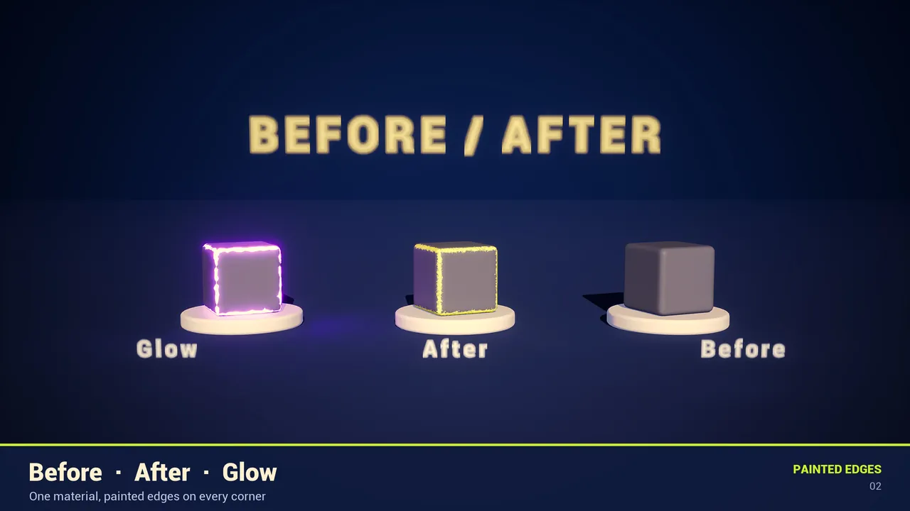
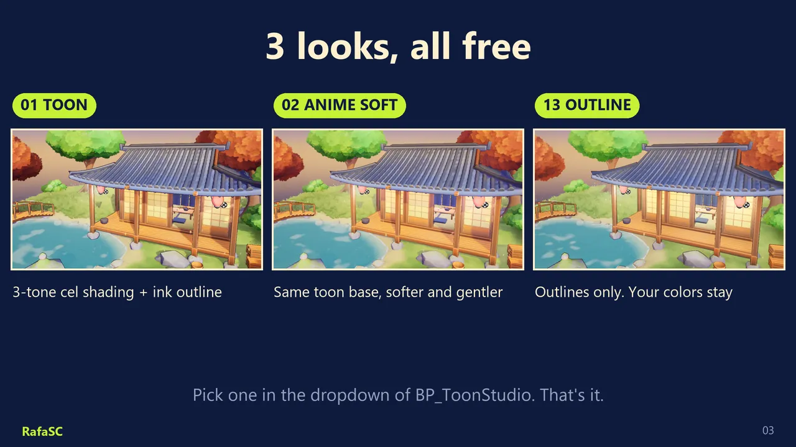
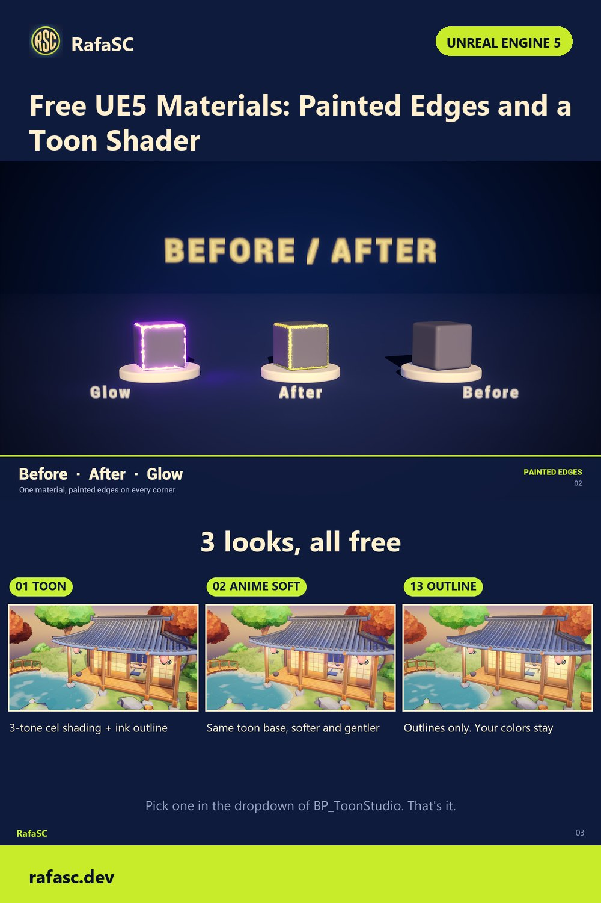

Free
Free UE5 materials: a painted edge shader and a toon shader
I publish two free packs for Unreal Engine 5 on Fab. Painted Edges is a Material Function that paints hand-painted edges on a mesh with no UVs, no textures and no baking. Toon Studio Lite is a post-process toon shader for UE 5.8 with three looks. Both can be used in commercial projects under the Fab license.
By RafaSC, 3D and technical artist · Updated · 3 min read

The two free packs
| Painted Edges | Toon Studio Lite | |
|---|---|---|
| What it is | A drop-in Material Function that paints the edges of a mesh | A post-process toon shader carried by one actor |
| Unreal Engine | Tested on 5.5 and 5.8 | 5.8 only |
| What is inside | 3 Material Functions, 1 master material, 13 parameters, 6 colour presets, 2 example materials, a demo map with 7 stations | 3 looks (01 Toon, 02 Anime Soft, 13 Outline), Outline Color and Shadow Color controls, a demo level |
| Textures | None | None |
| Needs | Bevelled or smooth-normal edges | Deferred renderer |
| Not for | Path Tracer | Forward renderer |
| Price | Free | Free |
Painted Edges
It paints a band along every edge of your mesh: filled in the centre, fading outwards and broken up by wear that never leaves gaps. You plug your own texture or colour in and take it out with painted edges on top.

How it finds the edges without a curvature map, and the mesh rules that matter, are in hand-painted edge wear without baking. The product page is Painted Edges Shader.
Toon Studio Lite
Drag BP_ToonStudio into the level and pick a look. No material changes, no plugins, no C++.

Install steps, settings and limits are in free toon shader for Unreal Engine 5.8.
What is not free
Honesty first: the rest of my catalogue is paid. The free packs are complete and usable on their own, not trials that expire.
| Paid pack | What it adds |
|---|---|
| Custom Toon Shaders Studio | 13 looks instead of 3, effect mixing, Save Preset, highlight outlines |
| Stylized Water Material | Procedural water, 6 presets, spline river, waterfall, floating objects |
| See-Through Occlusion | See your character through walls, roofs and trees |
| Stylized Snow & Moss Coverage | Painted snow and moss on any material, runtime weather |
License and support
Both free packs are regular Fab listings, so the Fab license you choose applies, including commercial projects. Questions go in the Questions tab of each Fab listing.
Frequently asked questions
Are these UE5 materials free for commercial use?
Yes. They are free listings on Fab and can be used commercially under the Fab license.
Which Unreal Engine versions do the free packs support?
Painted Edges was tested on UE 5.5 and 5.8. Toon Studio Lite is for UE 5.8 only.
Do the free packs need textures?
No. Both are procedural: the effects use no texture files.
What is the difference between Toon Studio Lite and the full pack?
The Lite has 3 fixed looks. The full pack, Custom Toon Shaders Studio, has 13 looks, effect mixing, Save Preset and per-object highlight outlines.
Related guides

Save this guide for later. Product used on this page: Painted Edges Shader.